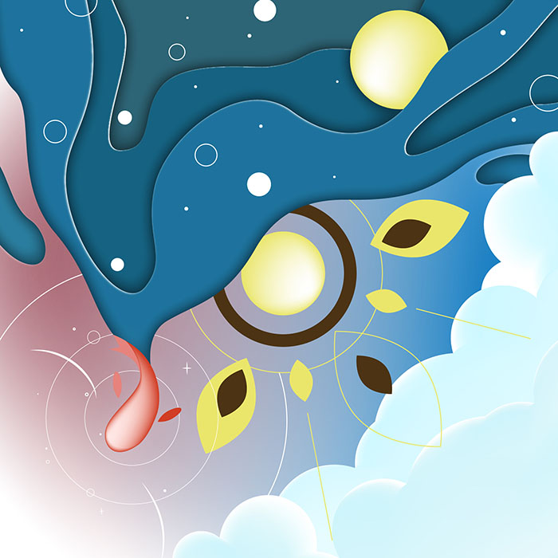

グラフィックデザイン「夏の日」
授業で、季節（春夏秋冬）をテーマにAdobe Illustrationを用いて平面構成の制作をしました。

クライアント
-----
担当した作業
-----
制作期間
2024.9.16 - 11.11
使用したソフト
aaaaa
注意・工夫した点
季節は夏を選びましたが、夏のモチーフだけだと物足りないなと感じたので、夏の１日をテーマに制作しました。
上から24時間、時計回りで夏の１日が感じられる様に制作しました。朝には爽やかな入道雲、夕方では夕暮れと色のイメージが似ている金魚、そして金魚にお祭りのイメージがあったため、金魚が夜を連れてくるという作品にしました。
課題
Illustratorにまだ慣れておらず、アイデアは頭の中にあっても、それをうまく再現・表現することができていないと感じました。今後は作品をたくさん制作しながら、ソフトの扱いに慣れていきたいと思いました。